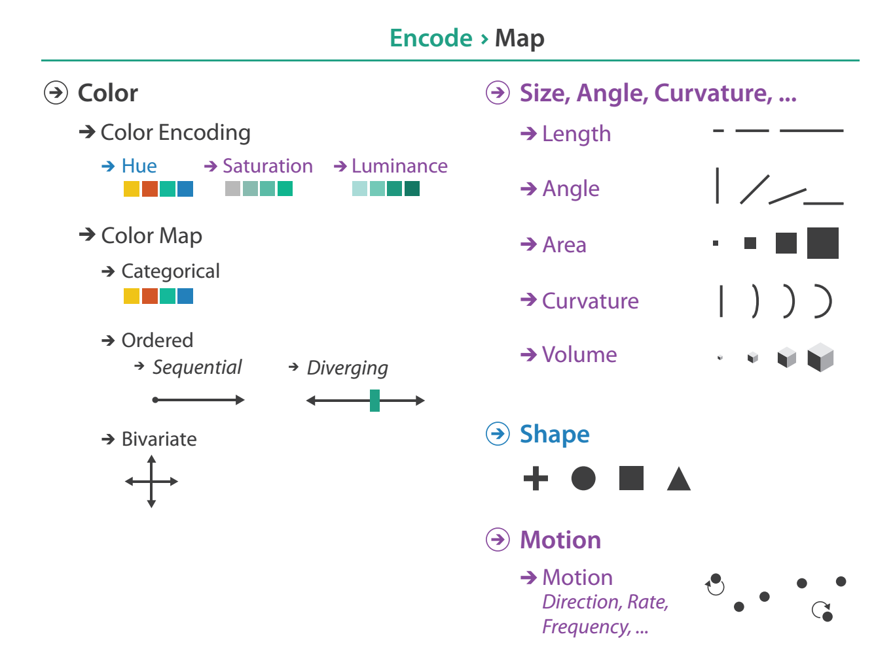

Networks and Color
MIDS W209: Information Visualization
John Alexis Guerra Gómez | john.guerra[at]gmail.com | @duto_guerra
Andy Reagan | andy[at]andyreagan.com | @andyreagan
https://johnguerra.co/lectures/MIDS_W209_Information_Visualization/08_Networks_and_Trees/
Andy Reagan | andy[at]andyreagan.com | @andyreagan
https://johnguerra.co/lectures/MIDS_W209_Information_Visualization/08_Networks_and_Trees/

Partially based on slides from Tamara Munzner
Arrange networks and trees

What we are going to learn
- How to recognize, create, and store network data
- Algorithms to visualize network data
- How to use color
Networks: Data
Define network data
Networks are defined by two things: nodes, heirachy, and connections between those nodes.
How to store network data
- Node and link files
- Adjacency matrix
- Nested: XML/JSON
- Flat
How to create network data
- Group-by
- Extract links
Networks: force simulations
Idiom: force-directed placement
- visual encoding
- link connection marks, node point marks
- considerations
- spatial position: no meaning directly encoded
- left free to minimize crossings
- proximity semantics?
- sometimes meaningful
- sometimes arbitrary, artifact of layout algorithm
- tension with length
- long edges more visually salient than short
- spatial position: no meaning directly encoded
- tasks
- explore topology; locate paths, clusters
- scalability
- node/edge density E < 4N
Idiom: sfdp (multi-level force-directed placement)
- data
- original: network
- derived: cluster hierarchy atop it
- considerations
- better algorithm for same encoding technique
- same: fundamental use of space
- hierarchy used for algorithm speed/quality but not shown explicitly
- (more on algorithm vs encoding in afternoon)
- scalability
- nodes, edges: 1K-10K
- hairball problem eventually hits
Force Directed Layout
Use the force!
Beeswarm plot
Collision Detection
Force in a Box
Idiom: adjacency matrix view
- data: network
- transform into same data/encoding as heatmap
- derived data: table from network
- 1 quant attrib
- weighted edge between nodes
- 2 categ attribs: node list x 2
- visual encoding
- cell shows presence/absence of edge
- tasks:
- Identify clusters (topology)
- Summarize Topology/Distribution
- scalability
- 1K nodes, 1M edges
Adjacency Matrix
Connection vs. adjacency comparison
- adjacency matrix strengths
- predictability, scalability, supports reordering
- some topology tasks trainable
- node-link diagram strengths
- topology understanding, path tracing
- intuitive, no training needed
- empirical study
- node-link best for small networks
- matrix best for large networks
- if tasks don’t involve topological structure!
Networks: Other Idioms
Chord Diagram
- Data: Networks (small # of nodes)
- Tasks: Summarize connections. Identify highest degree
- Considerations: Usually good for origin -> destination

Edge Bundling
- Data: Networks
- Tasks: Summarize common connections.
- Considerations:
- Reduces cluttering
- Requires computing time
- Works with any link based idiom

Arc Diagram
- Data: Networks (few nodes)
- Tasks: Summarize common connections.
- Considerations:
- Nodes order matter
- Better with highly clustered data

Arc Diagram
Hive Plots
Semantic Substrates
- Data: Networks with many edges
- Task: Summarize distribution of non network attribs
- Considerations:
- Easier to understand
- Scale well
- Edges on demand work best


Idiom: Sankey Diagram
- Good for depicting flow
- Not that well known
Idiom: Parallel Sets
- Good for depicting flow
- Not that well known
Metrics and Statistics
Network Analysis Metrics
- Connections
- Distribution
- Segmentation
Use them as derived attributes
Tools
Tools that contain layout algorithms
Combining layouts and visualization
Many possibilities: connect any tools that can compute layouts to any other visualation tool. A few useful examples:
- d3 + vega-lite
- networkX + matplotlib (built-in)
Color
Encode > Map > Color
Categorical vs Ordered Color

Decomposing color
- first rule: do not talk about color!
- color is confusing if treated as monolithic
- decompose into three channels
- ordered can show magnitude
- luminance: how bright
- saturation: how colorful
- categorical can show identity
- hue: what color
- channels have different properties
- what they convey directly to perceptual system
- how much they can convey: how many discriminable bins can we use?

Spectral sensitivity

Luminance
- need luminance for edge detection
- fine-grained detail only visible through luminance contrast
- legible text requires luminance contrast!
- intrinsic perceptual ordering